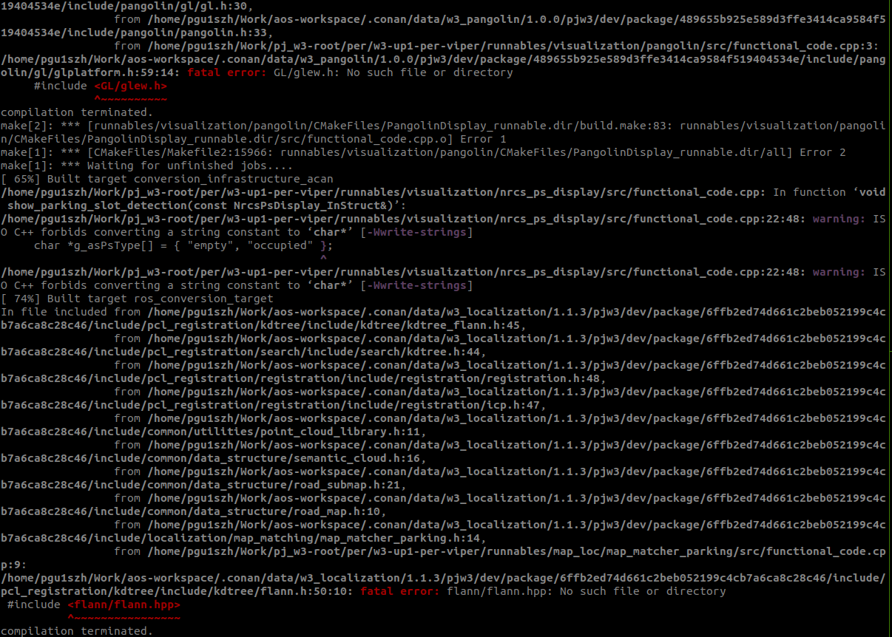
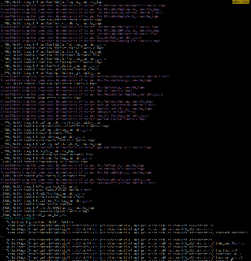

Establish AOS-VIPER compilation (OpenCV 3.4.3+EIGEN 3.3.7) & operating environment
Hardware environment: HP Z2 G5 Performance Desktop - Fleetmanagement - Docupedia (bosch.com)
Software environment: bosch osd6 / ubuntu 20.04 AOS 0.12.0
AOS-VIPER
according to Releases - Middleware and Development Tools for next-gen. Driving Applications (bosch.com) After finishing Install system dependences and Install ROS Two steps, install ROS Noteic for Ubuntu 20.04
2. according to MW Release Note [Quick Start] - wave 3 development - Docupedia (bosch.com) Version AOS_2207.2.0 Four steps of Note, install AOS 0.12.0 related compilation environment
(Code warehouse address use: https://sourcecode01.de.bosch.com/scm/pjw3/aos-workspace.git）
3. Add the AOS warehouse of the WAVE3 project and set the account password information
conan remote add w3-dev https://rb-artifactory.bosch.com/artifactory/api/conan/xc-da-pjw3-dev-local
conan user
4. Pull down the Browse PJ_W3 / PJ_W3-ROOT-SOURCE CODE 01 (bosch.com) code, and the W3-up1-PUB-Gateway, W3-UP1-PEB-PER-VIPERPull the code one by one
(You can also replace all the SSH address prefix in the .git/Config for the corresponding address of the HTTPS prefix in the previous step, git submodule update --Init -recursive to update all Submodule code)
5. Install the dependent library necessary for modules such as w3_localization to prevent subsequent compilation from finding the problems and link errors (see the figure below); if related problems are followed, install the corresponding lack of libraries.


Flann/GLEW/BOOST header file cannot be found:
sudo apt-get install libglew-dev libboost-dev libboost-thread-dev libboost-filesystem-dev libflann-dev
OpenCV-Jasper/Openni/VTK link error:
sudo add-apt-repository "deb http://security.ubuntu.com/ubuntu xenial-security main"
sudo apt install libjasper1 libjasper-dev
sudo apt install libopenni2-dev libvtk7-dev
6. Get the dependent library PER_LIB of the 191 machine, and the path is under/mnt/sdb; after copying
7. Modify all the relevant correspondence of the environment in the script, and set the effectiveness
source w3-up1-per-viper/prepare_ws.sh
source per_lib/set_gpu_env.sh
8. Switch to the directory W3-Up1-Per-Viper, run the script per_build_release.sh compile viper release, per_build.sh compile viper debug
Note: After compiling AOS for the first time to generate related files, compile again can add parameters -F to avoid generating speeding up again. For example: ./ per_build_release.sh -F
